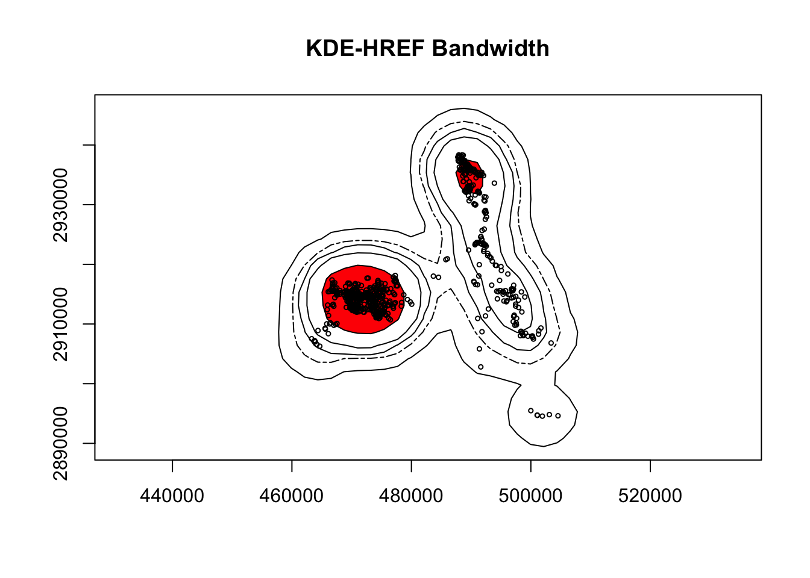
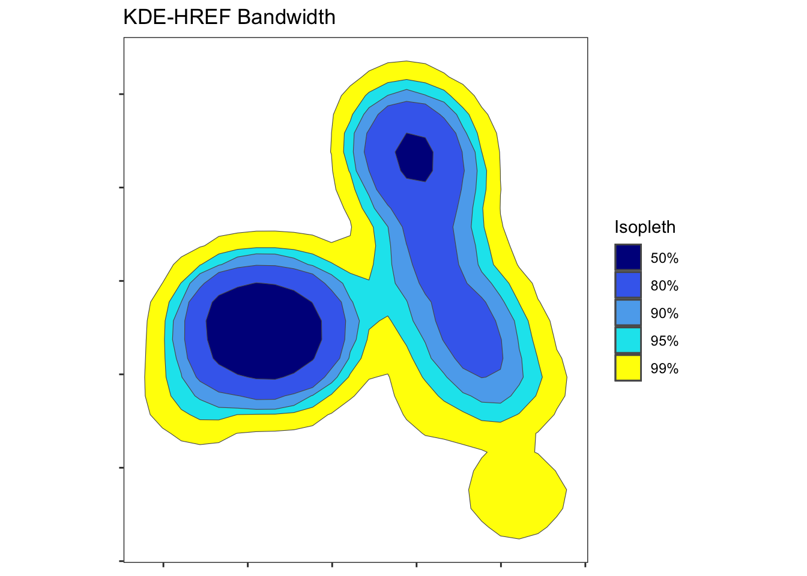
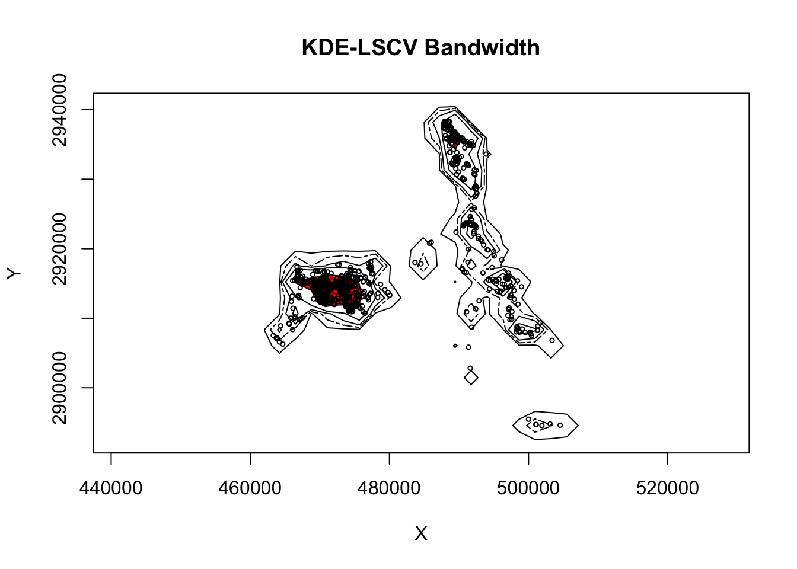
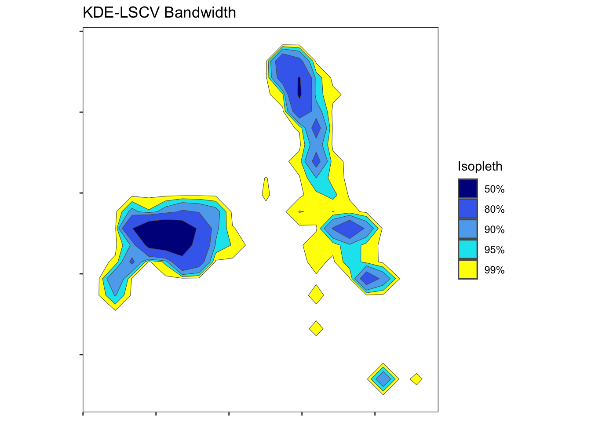
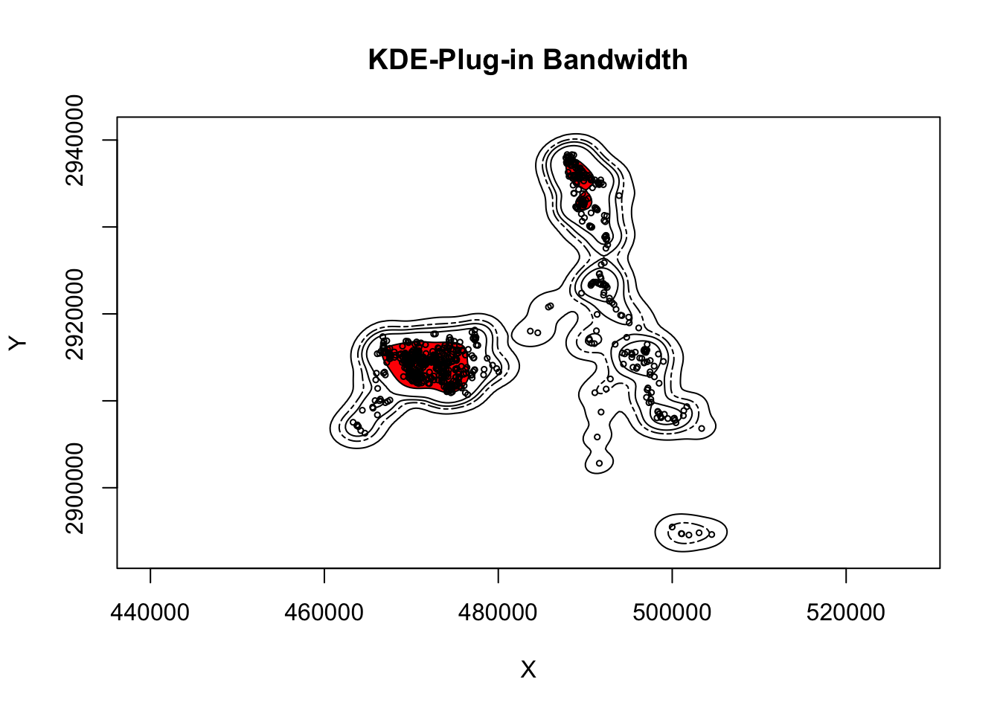
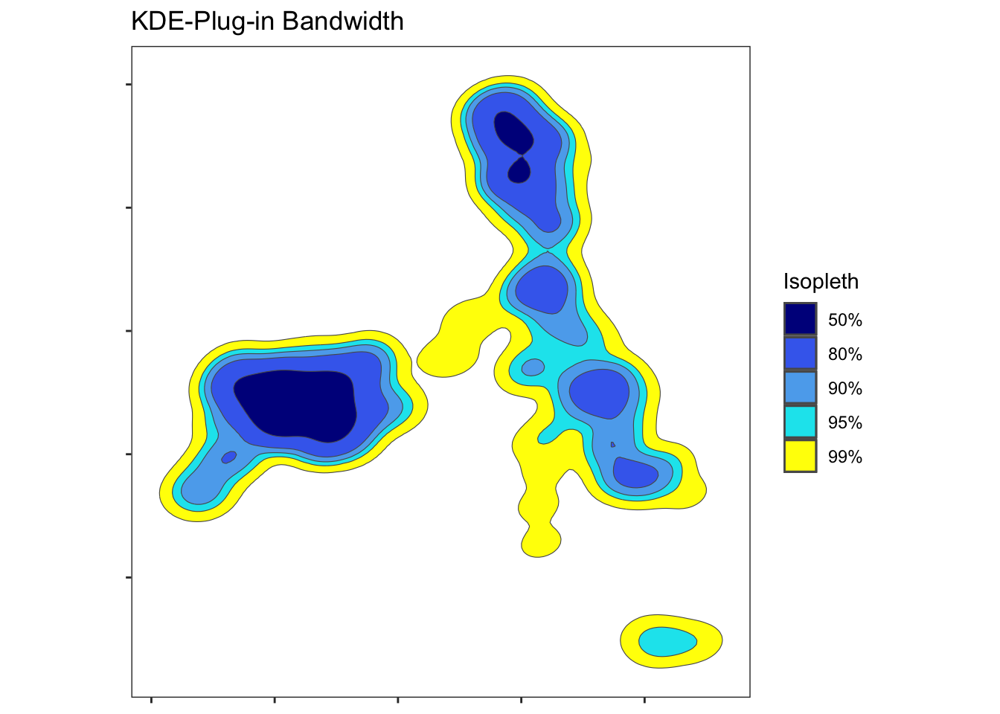
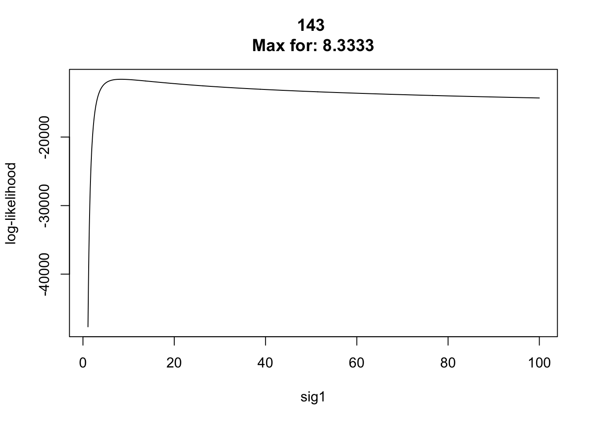
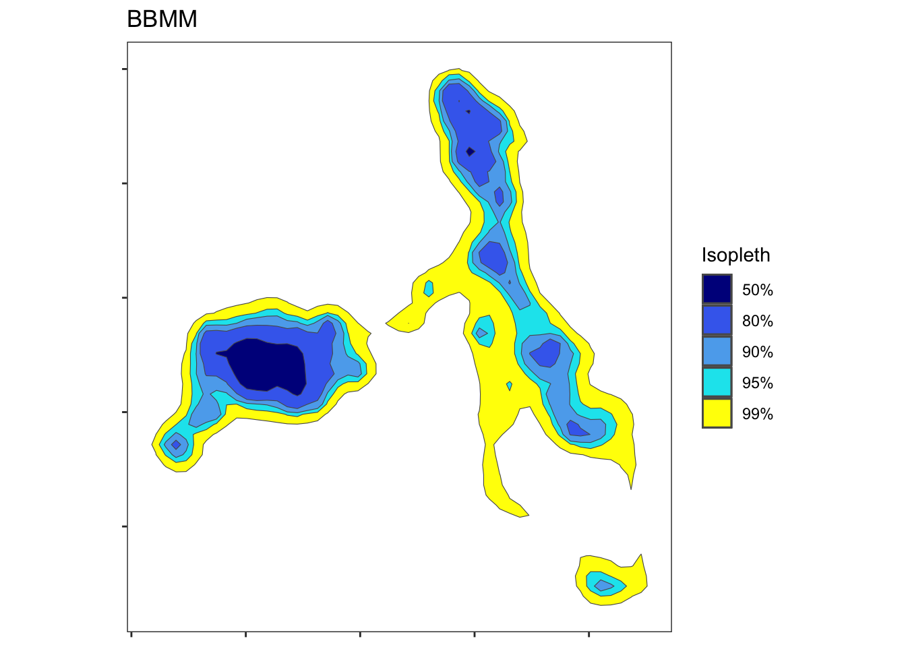
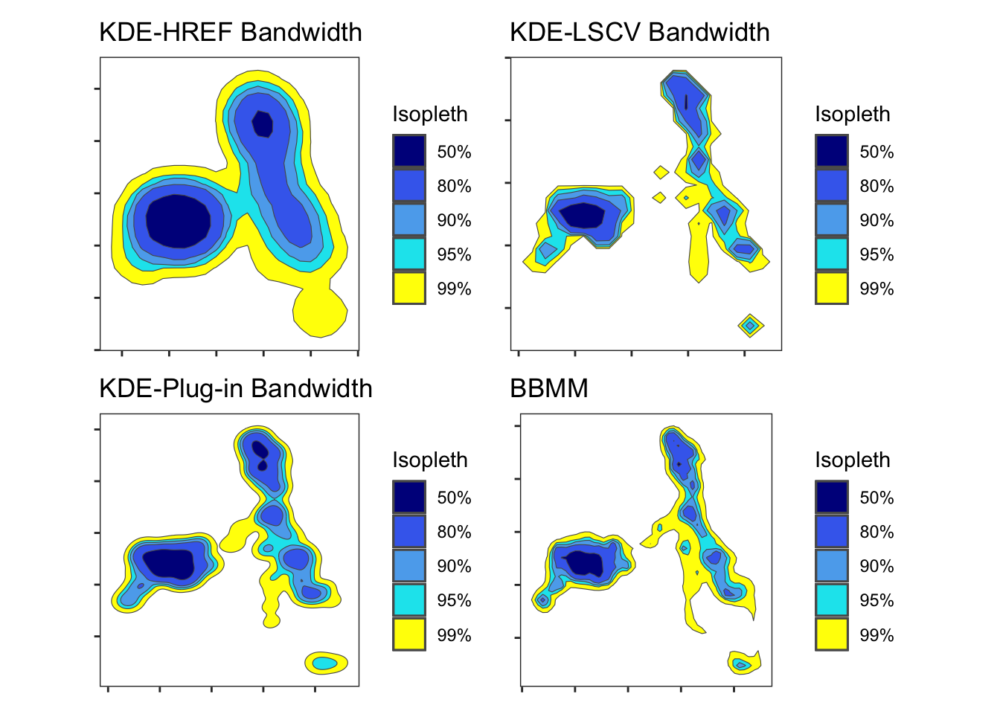

24 Kernel density estimators (KDE) with various bandwidth selection
Here we will estimate home range using several kernel density estimators on the same animal. We will conclude with estimating home range using Brownian Bridge Movement Models (BBMM) and autocorrelated kernel density estimator developed for autocorrelated global positioning system datasets for comparison to traditional kernel density estimators.
1. Open the script “Panther_All4.Rmd” and run code directly from the script. Take note here that this script uses the adehabitatHR package for traditional kernel density estimators that uses SpatialPointsDataFrames. Until adehabitatHR is updated to the sf package, no further changes will made to this script. For use of package amt for all home range estimators, see the new script added to “Panther_All4_amt.Rmd”
2. First we need to load the packages needed for the exercise
3. Now let’s have a separate section of code to include projection information we will use throughout the exercise. In previous versions, these lines of code were within each block of code
4. We will use an abbreviated dataset to save processing time and the code will also output shapefiles of home ranges
panther<-read.csv("data/pantherjitter.csv",header=T)
panther$CatID <- as.factor(panther$CatID)
cat143 <- subset(panther, panther$CatID == "143")
cat143$CatID <- droplevels(cat143$CatID)5. We will start by running KDE with href similar to the href exercise.
loc <- data.frame("x"=cat143$X,"y"=cat143$Y)
cats <- SpatialPointsDataFrame(loc,cat143)
proj4string(cats) <- "+proj=utm +zone=17 +ellps=WGS84"
udbis <- kernelUD(cats[,1], h = "href")
ver <- getverticeshr(udbis, unin = "m", unout = "km2", standardize=TRUE)
ver50 <- getverticeshr(udbis, percent=50,unin = "m", unout = "km2", standardize=TRUE)
ver80 <- getverticeshr(udbis, percent=80,unin = "m", unout = "km2", standardize=TRUE)
ver90 <- getverticeshr(udbis, percent=90,unin = "m", unout = "km2", standardize=TRUE)
ver95 <- getverticeshr(udbis, percent=95,unin = "m", unout = "km2", standardize=TRUE)
ver99 <- getverticeshr(udbis, percent=99,unin = "m", unout = "km2", standardize=TRUE)
#NOTE: loading package ctmm here prevents plotting these for some reason
plot(ver99,main="KDE-HREF Bandwidth", font=1, cex=0.8, axes=T)
plot(ver95, lty=6, add=TRUE)
plot(ver90, add=TRUE)
plot(ver80, add=TRUE)
plot(ver50, col="red",add=TRUE)
points(loc, pch=1, cex=0.5)
#Code to plot sf form in ggplot which is necessary to compare all 4 estimators due to removal of BBMM package from CRAN.
ver50vol <- st_as_sf(ver50)
ver80vol <- st_as_sf(ver80)
ver90vol <- st_as_sf(ver90)
ver95vol <- st_as_sf(ver95)
ver99vol <- st_as_sf(ver99)
g1 <- ggplot(ver99vol)+
geom_sf(aes(fill="99%"))+
geom_sf(data=ver95vol, aes(fill="95%"))+
geom_sf(data=ver90vol, aes(fill="90%"))+
geom_sf(data=ver80vol, aes(fill="80%"))+
geom_sf(data=ver50vol, aes(fill="50%"))+
scale_fill_manual(name="Isopleth", values=c("blue4","royalblue2","steelblue2", "turquoise2","yellow1"))+
theme_bw()+
theme(panel.grid = element_blank(), axis.text = element_blank())+
ggtitle("KDE-HREF Bandwidth")
g1
6. Next we will run KDE with hlscv similar to hlscv exercise.
udbis2 <- kernelUD(cats[,1], h = "LSCV")
#Notice the error
# The algorithm did not converge
# within the specified range of hlim: try to increase it
## Example of estimation using LSCV
cat143$jitterX <- jitter(cat143$X, factor=500)
cat143$jitterY <- jitter(cat143$Y, factor=500)
locjitter <- data.frame("x"=cat143$jitterX,"y"=cat143$jitterY)
jitterspdf <- SpatialPointsDataFrame(locjitter,cat143)
proj4string(jitterspdf) <- "+proj=utm +zone=17 +ellps=WGS84"
udbis3 <- kernelUD(jitterspdf[,1], h = "LSCV")#, hlim = c(100, 500),extent=1)
#Now rerun with jitter factor = 100 then 500 instead of 50 and see what happens?
ver2 <- getverticeshr(udbis3, unin = "m", unout = "km2", standardize=TRUE)
#Or individually by isopleth
ver2_50 <- getverticeshr(udbis3, percent=50,unin = "m", unout = "km2", standardize=TRUE)
ver2_80 <- getverticeshr(udbis3, percent=80,unin = "m", unout = "km2", standardize=TRUE)
ver2_90 <- getverticeshr(udbis3, percent=90,unin = "m", unout = "km2", standardize=TRUE)
ver2_95 <- getverticeshr(udbis3, percent=95,unin = "m", unout = "km2", standardize=TRUE)
ver2_99 <- getverticeshr(udbis3, percent=99,unin = "m", unout = "km2", standardize=TRUE)
plot(ver2_99,main="KDE-LSCV Bandwidth",xlab="X", ylab="Y", font=1, cex=0.8, axes=T)
plot(ver2_95, lty=6, add=TRUE)
plot(ver2_90, add=TRUE)
plot(ver2_80, add=TRUE)
plot(ver2_50, col="red",add=TRUE)
points(loc, pch=1, cex=0.5)
ver2.50vol <- st_as_sf(ver2_50)
ver2.80vol <- st_as_sf(ver2_80)
ver2.90vol <- st_as_sf(ver2_90)
ver2.95vol <- st_as_sf(ver2_95)
ver2.99vol <- st_as_sf(ver2_99)
g2 <- ggplot(ver2.99vol)+
geom_sf(aes(fill="99%"))+
geom_sf(data=ver2.95vol, aes(fill="95%"))+
geom_sf(data=ver2.90vol, aes(fill="90%"))+
geom_sf(data=ver2.80vol, aes(fill="80%"))+
geom_sf(data=ver2.50vol, aes(fill="50%"))+
scale_fill_manual(name="Isopleth", values=c("blue4","royalblue2","steelblue2", "turquoise2","yellow1"))+
theme_bw()+
theme(panel.grid = element_blank(), axis.text = element_blank())+
ggtitle("KDE-LSCV Bandwidth")
g2
7. Then we will run KDE with hplug-in similar to hplug-in exercise.
##Get only the coordinates
loc <- data.frame("x"=cat143$X, "y"=cat143$Y)
##Make SpatialPointsDataFrame using the XY, attributes, and projection
spdf <- SpatialPointsDataFrame(loc, cat143)
proj4string(spdf) <- "+proj=utm +zone=17 +ellps=WGS84"
#Calculate the bandwidth matrix to use later in creating the KDE
Hpi1 <- Hpi(x = loc)
Hpi1 [,1] [,2]
[1,] 1917158.8 277154.8
[2,] 277154.8 1030023.5##write out the bandwidth matrix to a file as you might want to refer to it later
#write.table(Hpi1, paste("hpivalue_", "143", ".txt", sep=""), row.names=FALSE,sep="\t")
##Create spatial points from just the xy?s
loc.pts <- SpatialPoints(loc)
proj4string(loc.pts) <- "+proj=utm +zone=17 +ellps=WGS84"
##For home range calculations, ##some packages require evaluation points (ks) while others require grid as spatial pixels (adehabitatHR).
##Set the expansion value for the grid and get the bbox from the SpatialPointsDataFrame
expandValue <- 5000 #This value is the amount to add on each side of the bbox.
#Change to 5000 if error occurs at 99% ud
boundingVals <- spdf@bbox
##Get the change in x and y and adjust using expansion value
deltaX <- as.integer(((boundingVals[1,2]) - (boundingVals[1,1])) + (2*expandValue))
deltaY <- as.integer(((boundingVals[2,2]) - (boundingVals[2,1])) + (2*expandValue))
##100 meter grid for data in this exercise
gridRes <- 100
gridSizeX <- deltaX / gridRes
gridSizeY <- deltaY / gridRes
##Offset the bounding coordinates to account for the additional area
boundingVals[2,1] <- boundingVals[2,1] - expandValue
boundingVals[2,2] <- boundingVals[2,2] + expandValue
boundingVals[1,1] <- boundingVals[1,1] - expandValue
boundingVals[1,2] <- boundingVals[1,2] + expandValue
##Grid Topology object is basis for sampling grid (offset, cellsize, dim)
gridTopo <- GridTopology((boundingVals[,1]), c(gridRes,gridRes),c(gridSizeX,gridSizeY))
##Using the Grid Topology and projection create a SpatialGrid class
sampGrid <- SpatialGrid(gridTopo)
proj4string(sampGrid) <- "+proj=utm +zone=17 +ellps=WGS84"
##Cast over to Spatial Pixels
sampSP <- as(sampGrid, "SpatialPixels")
##convert the SpatialGrid class to a raster
sampRaster <- rast(sampGrid)
##set all the raster values to 1 such as to make a data mask
sampRaster[] <- 1
##Get the center points of the mask raster with values set to 1
evalPoints <- xyFromCell(sampRaster, 1:ncell(sampRaster))
##Create the KDE using the evaluation points
hpikde <- kde(x=loc, H=Hpi1, eval.points=evalPoints)
##Create a template raster based upon the mask and then assign the values from the kde
#to the template
hpikde.raster <- rast(sampRaster)
hpikde.raster <- setValues(hpikde.raster,hpikde$estimate)
##Lets take this raster and put it back into an adehabitatHR object. This is convenient to use other adehabitatHR capabilities such as overlap indices or percent volume contours
hpikde.raster.df <- as.data.frame(hpikde.raster, xy=FALSE)
hpikde.raster.df2 <- as.data.frame(hpikde.raster, xy=TRUE)
hpikde.raster.xy <- data.frame(x=hpikde.raster.df2$x,y=hpikde.raster.df2$y)
##Cast over to SPxDF
hpikde.px <- SpatialPixelsDataFrame(hpikde.raster.xy,hpikde.raster.df)
##create new estUD using the SPxDF
hpikde.ud <- new("estUD", hpikde.px)
##Assign values to a couple slots of the estUD
hpikde.ud@vol = FALSE
hpikde.ud@h$meth = "Plug-in Bandwidth"
##Convert the UD values to volume using getvolumeUD from adehabitatHR and cast over to a raster
hpikde.ud.vol <- getvolumeUD(hpikde.ud, standardize=TRUE)
hpikde.ud.vol.raster <- rast(hpikde.ud.vol)
##Here we generate volume contours using the UD
hpikde.50vol <- getverticeshr(hpikde.ud, percent = 50)#,unin = "m", unout = "km2")
hpikde.80vol <- getverticeshr(hpikde.ud, percent = 80,unin = "m", unout = "km2")
hpikde.90vol <- getverticeshr(hpikde.ud, percent = 90,unin = "m", unout = "km2")
hpikde.95vol <- getverticeshr(hpikde.ud, percent = 95,unin = "m", unout = "km2")
hpikde.99vol <- getverticeshr(hpikde.ud, percent = 99,unin = "m", unout = "km2")
plot(hpikde.99vol,main="KDE-Plug-in Bandwidth",xlab="X", ylab="Y", font=1, cex=0.8, axes=T)
plot(hpikde.95vol, lty=6, add=TRUE)
plot(hpikde.90vol, add=TRUE)
plot(hpikde.80vol, add=TRUE)
plot(hpikde.50vol,col="red", add=TRUE)
points(loc, pch=1, cex=0.5)
hpikde.50vol <- st_as_sf(hpikde.50vol)
hpikde.80vol <- st_as_sf(hpikde.80vol)
hpikde.90vol <- st_as_sf(hpikde.90vol)
hpikde.95vol <- st_as_sf(hpikde.95vol)
hpikde.99vol <- st_as_sf(hpikde.99vol)
g3 <- ggplot(hpikde.99vol)+
geom_sf(aes(fill="99%"))+
geom_sf(data=hpikde.95vol, aes(fill="95%"))+
geom_sf(data=hpikde.90vol, aes(fill="90%"))+
geom_sf(data=hpikde.80vol, aes(fill="80%"))+
geom_sf(data=hpikde.50vol, aes(fill="50%"))+
scale_fill_manual(name="Isopleth", values=c("blue4","royalblue2","steelblue2", "turquoise2","yellow1"))+
theme_bw()+
theme(panel.grid = element_blank(), axis.text = element_blank())+
ggtitle("KDE-Plug-in Bandwidth")
g3
8. We will finish by running BBMM. Because BBMM package is no longer maintained on CRAN, we will use the function provided by adehabitatHR package with plotting adapted to sf and ggplot2 packages
#To run BBMM we first need to use the original dataset to calculate time between locations
panther$NewTime <- str_pad(panther$TIMEET2,4, pad= "0")
panther$NewDate <- paste(panther$DateET2,panther$NewTime)
#Used to sort data in code below for all deer
panther$DT <- as.POSIXct(strptime(panther$NewDate, format='%Y %m %d %H%M'))
#Sort Data
panther <- panther[order(panther$CatID, panther$DT),]
#TIME DIFF NECESSARY IN BBMM CODE
timediff <- diff(panther$DT)*60
# remove first entry without any difference
panther <- panther[-1,]
panther$timelag <-as.numeric(abs(timediff))
cat143<-subset(panther, panther$CatID == "143")
cat143 <- cat143[-1,] #Remove first record with wrong timelag
cat143$CatID <- factor(cat143$CatID)
loc <- st_as_sf(x = cat143, coords = c("X","Y"),crs = utm.crs)
cat143traj <- sf2ltraj(loc, date="DT",id="CatID")
sig_df<-(liker(cat143traj, sig2 = 10, rangesig1 = c(1, 100)))
sig1_value<-sig_df[[1]]$sig1
BBMM = kernelbb(cat143traj, sig1 = sig1_value, sig2 = 10, grid = 100)
image(BBMM)hr99<-getverticeshr(BBMM, 99, unout = "km2")
hr99Object of class "SpatialPolygonsDataFrame" (package sp):
Number of SpatialPolygons: 1
Variables measured:
id area
homerange homerange 476.8874hr99_sf<-st_as_sf(hr99)
hr95<-getverticeshr(BBMM, 95, unout="km2")
hr95Object of class "SpatialPolygonsDataFrame" (package sp):
Number of SpatialPolygons: 1
Variables measured:
id area
homerange homerange 270.3336hr95_sf<-st_as_sf(hr95)
hr90<-getverticeshr(BBMM, 90, unout="km2")
hr90Object of class "SpatialPolygonsDataFrame" (package sp):
Number of SpatialPolygons: 1
Variables measured:
id area
homerange homerange 188.3048hr90_sf<-st_as_sf(hr90)
hr80<-getverticeshr(BBMM, 80, unout="km2")
hr80Object of class "SpatialPolygonsDataFrame" (package sp):
Number of SpatialPolygons: 1
Variables measured:
id area
homerange homerange 103.829hr80_sf<-st_as_sf(hr80)
hr50<-getverticeshr(BBMM, 50, unout="km2")
hr50Object of class "SpatialPolygonsDataFrame" (package sp):
Number of SpatialPolygons: 1
Variables measured:
id area
homerange homerange 26.88322hr50_sf<-st_as_sf(hr50)
g4 <- ggplot(hr99_sf)+
geom_sf(aes(fill="99%"))+
geom_sf(data=hr95_sf, aes(fill="95%"))+
geom_sf(data=hr90_sf, aes(fill="90%"))+
geom_sf(data=hr80_sf, aes(fill="80%"))+
geom_sf(data=hr50_sf, aes(fill="50%"))+
scale_fill_manual(name="Isopleth", values=c("blue4","royalblue2","steelblue2", "turquoise2","yellow1"))+
theme_bw()+
theme(panel.grid = element_blank(), axis.text = element_blank())+
ggtitle("BBMM")
g4
9. We can add 4 estimators to the plot window to compare across estimators using the patchwork package
Attaching package: 'patchwork'The following object is masked from 'package:terra':
areaThe following object is masked from 'package:raster':
areaThe following object is masked from 'package:MASS':
areag1+g2+g3+g4+plot_layout(ncol=2)
Or using ggplot2 package and a few other packages
library(magrittr)
library(multipanelfigure)
figure1 <- multi_panel_figure(columns = 2, rows = 2, panel_label_type = "none")
# show the layout
figure1
figure1 %<>%
fill_panel(g1, column = 1, row = 1) %<>%
fill_panel(g2, column = 2, row = 1) %<>%
fill_panel(g3, column = 1, row = 2) %<>%
fill_panel(g4, column = 2, row = 2)
figure110. We will quickly explore autocorrelated kernel density estimator. It was easier to convert our dataframe to a move object prior to creating a telemetry object required by package ctmm.
library(ctmm)
cat143traj <- as.ltraj(st_coordinates(loc),loc$DT,id=loc$CatID)
#cat143traj <- sf2ltraj(loc, date="DT",id="CatID")
cat.move <- move(x=cat143$X, y= cat143$Y,time=cat143$DT,data=cat143,proj=CRS("+proj=utm +zone=17 +ellps=WGS84"),animal=cat143$CatID)
cat.telem <- as.telemetry(cat.move,timeformat="auto", timezone = "EST", projection=NULL, datum= "North American Datum 1983", na.rm="row",mark.rm=FALSE,keep=FALSE, drop=TRUE)
GUESS <- ctmm.guess(cat.telem,interactive=FALSE)
GUESS2 <- ctmm(tau=1)
FIT <- ctmm.fit(cat.telem,GUESS)
FIT2 <- ctmm.fit(cat.telem,GUESS2)
UD <- akde(cat.telem,FIT)
UD2 <- akde(cat.telem,FIT2)
plot(cat.telem,UD=UD)
UD.sf1 <- as.sf(UD2,level.UD = 0.99)
UD.sf2 <- as.sf(UD2,level.UD = 0.95)
UD.sf3 <- as.sf(UD2,level.UD = 0.90)
UD.sf4 <- as.sf(UD2,level.UD = 0.80)
UD.sf5 <- as.sf(UD2,level.UD = 0.50)
plot(cat.telem,UD=UD2,level.UD = 0.99,main="AKDE",font=1, cex=0.8, axes=T)
plot(cat.telem,UD=UD2,level.UD = 0.95, lty=6, add=TRUE)
plot(cat.telem,UD=UD2,level.UD = 0.90, lty=5, add=TRUE)
plot(cat.telem,UD=UD2,level.UD = 0.80, lty=4, add=TRUE)
plot(cat.telem,UD=UD2,level.UD = 0.50, add=TRUE)
g5 <- ggplot(UD.sf1)+
geom_sf(aes(fill="99%"))+
geom_sf(data=UD.sf2, aes(fill="95%"))+
geom_sf(data=UD.sf3, aes(fill="90%"))+
geom_sf(data=UD.sf4, aes(fill="80%"))+
geom_sf(data=UD.sf5, aes(fill="50%"))+
scale_fill_manual(name="Isopleth", values=c("blue4","royalblue2","steelblue2", "turquoise2","yellow1"))+
theme_bw()+
theme(panel.grid = element_blank(), axis.text = element_blank())+
ggtitle("autocorrelated KDE-tau=1")
g511. We can then plot akde along with other estimators to compare
g1+g3+g4+g5+plot_layout(ncol=2)